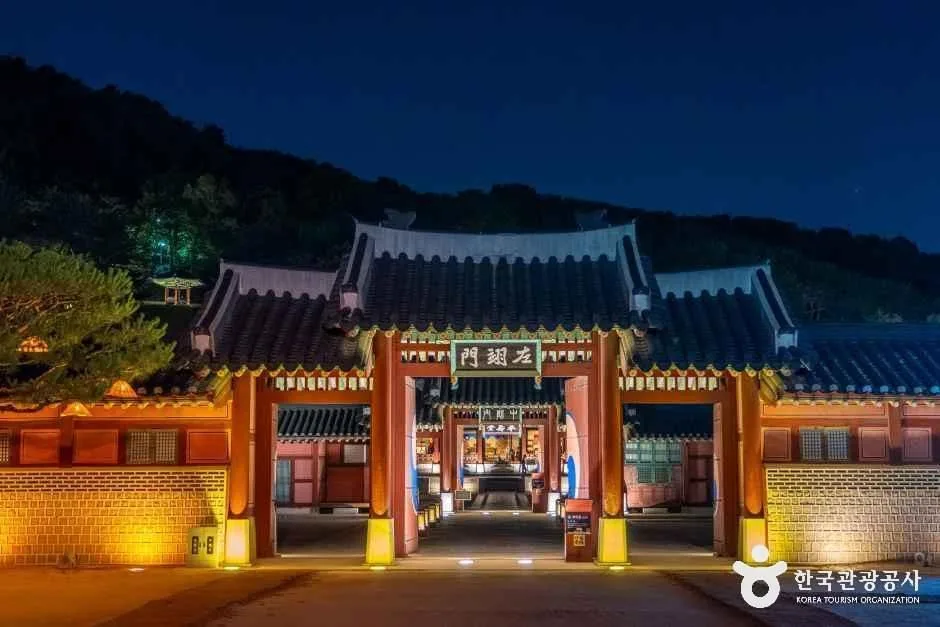
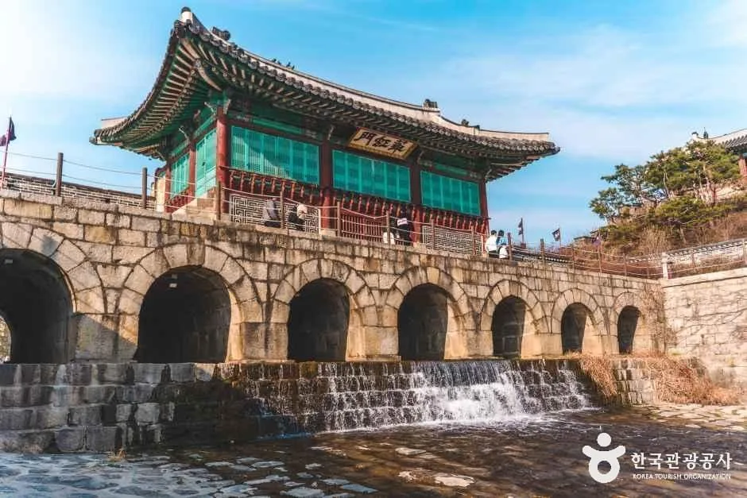
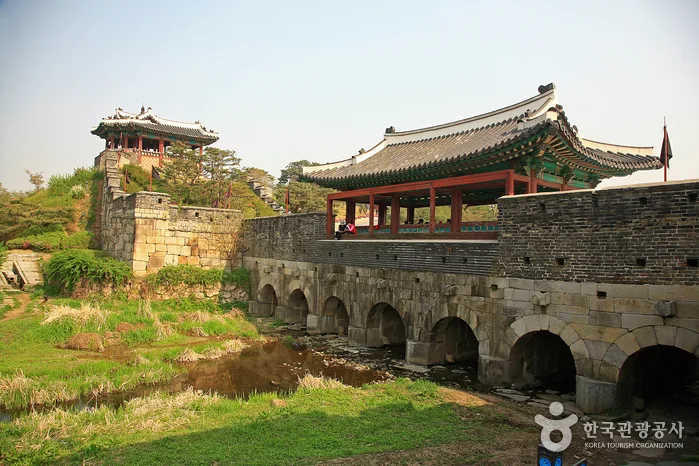
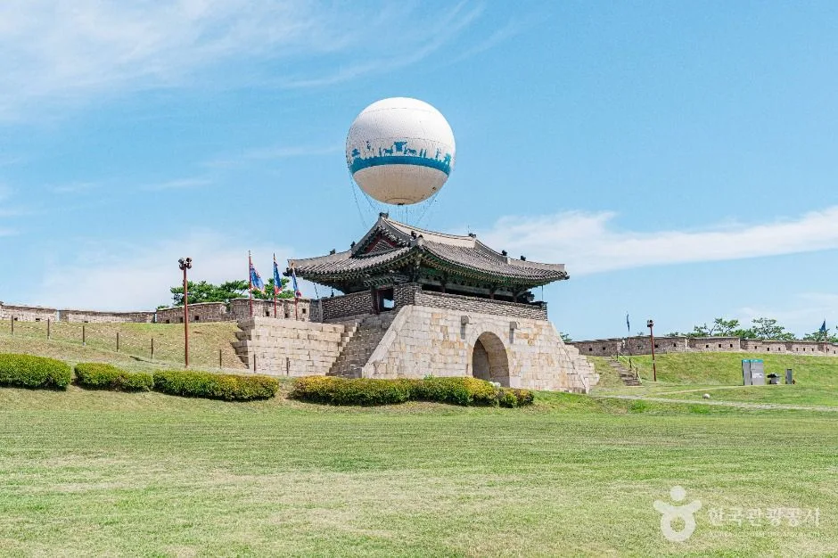
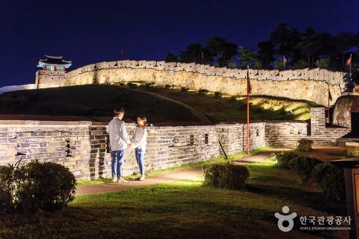
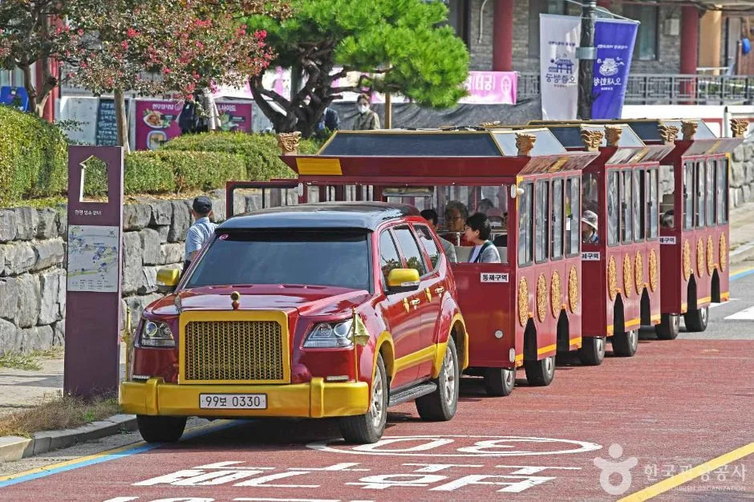
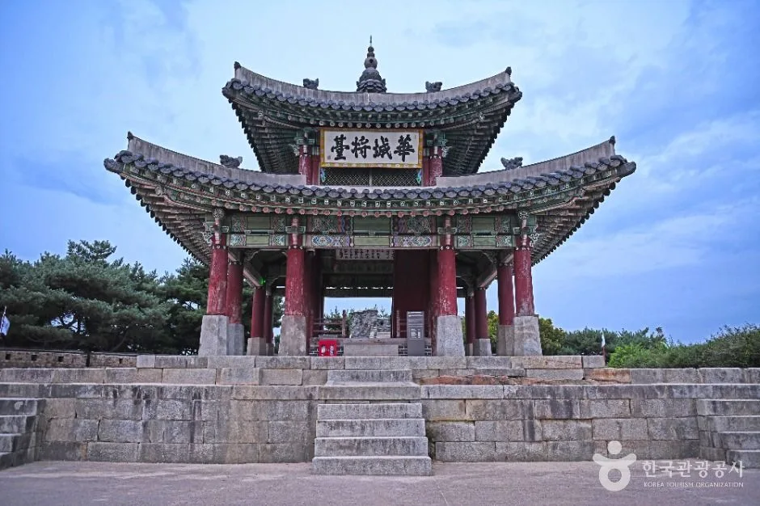
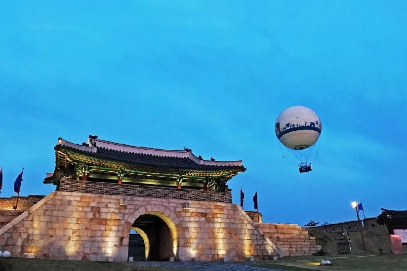

▲ 야간개장 중인 수원 화성행궁의 밤. '달빛화담(花談)'이라는 이름으로 매년 봄부터 가을까지 야간 관람을 운영한다 ⓒ 한국관광공사
1. 왜 지금 수원화성인가 — 문화제와 야간개장이 겹치는 10월
2026 수원화성문화제가 10월 4일(일)부터 11일(일)까지 8일간, 화성행궁 광장 일원에서 열린다. 유네스코 세계유산 수원화성을 배경으로 매년 가을 열리는 이 축제는 정조 임금이 1795년 어머니 혜경궁 홍씨의 회갑을 기념해 화성으로 떠났던 8일간의 행차를 모티프로 한다. 올해 핵심 프로그램은 국내 최대 규모 왕실 퍼레이드로 꼽히는 '정조대왕 능행차'(10월 4일)이며, 이 밖에도 주제공연 '수원 판타지 – 야조', 수상퍼포먼스 '선유몽', 야간 시간여행극 '그날: 행궁야화', 시민 참여형 프로그램(시민도화서·축성놀이터)과 외국인 전용 라운지 '글로벌빌리지'가 함께 운영된다. 입장은 무료이며 일부 사전예약 체험 프로그램만 유료다.
여기에 화성행궁 야간개장('달빛화담, 花談')이 5월 1일부터 11월 1일까지 매주 금~일·공휴일 저녁 운영 중이라 문화제 기간과 자연스럽게 겹친다. 즉 낮에는 문화제 프로그램을, 해가 진 뒤에는 조명이 밝혀진 궁궐과 성곽을 함께 즐길 수 있는 구조다. 축제 하루만 보고 돌아가기보다, 야간개장 요일에 맞춰 저녁 일정을 짜면 같은 장소를 두 번 다른 얼굴로 볼 수 있다.
2. 프로그램 한눈에 — 능행차부터 미디어아트까지
10월 초 수원에서는 성격이 다른 세 행사가 동시에 진행된다는 점을 먼저 구분해두는 게 좋다. ①수원화성문화제(10.4~11)는 축제 본체, ②화성행궁 야간개장(~11.1 금~일)은 상설 야간 관람 프로그램, ③화서문 미디어아트(9.19~10.6)는 빛과 영상으로 구성된 별도 체험전이다. 아래 표로 정리했다.
| 행사 | 기간·시간 | 주요 내용 |
|---|---|---|
| 수원화성문화제 | 10.4(일)~11(일), 낮~야간 | 정조대왕 능행차(10.4), 야조·선유몽·행궁야화 공연 |
| 화성행궁 야간개장 '달빛화담' | ~11.1까지 금·토·일·공휴일 18:00~21:30(입장마감 21:00) | 3D홀로그램, 레이저 연출, 달빛 성곽투어(무료 해설) |
| 화서문 미디어아트 | 9.19~10.6, 매일 18:00~22:00 | 화서문 '새빛동락'(19:30·20:30·21:30), 장안문 360도 영상 |
정조대왕 능행차는 10월 4일 오전, 화성행궁 인근에서 출발해 시내 구간을 행진하는 방식으로 진행된다. 대규모 인원과 전통 의장 행렬이 이동하는 만큼 해당 시간대 일부 도로는 통제될 수 있어, 능행차 관람이 목적이라면 대중교통이나 도보 접근이 자차보다 안전하다. 반대로 야간개장이나 미디어아트만 볼 계획이라면 도로 통제 시간대를 피해 저녁 이후 도착하는 편이 무난하다. 정확한 통제 구간·시간은 축제가 임박하면 수원특례시·수원문화재단 채널에 공지되므로 출발 전 확인이 필요하다. 수원화성문화제 공식 홈페이지에서 확인 가능
3. 화성행궁 야간개장 — 시간·요금·프로그램
'달빛화담'이라는 이름의 화성행궁 야간개장은 2026년 5월 1일부터 11월 1일까지 매주 금·토·일요일과 공휴일 저녁 6시부터 9시 30분까지 운영된다(입장마감 오후 9시). 입장료는 성인 2,000원, 청소년·군인 1,500원, 어린이 1,000원으로 저렴한 편이며, 한복(개량한복 포함) 착용자·만 6세 이하 미취학 아동·만 65세 이상·장애인등록증 소지자는 무료 입장이 가능하다.
프로그램으로는 금·토요일 궁중다과체험(혜경궁 다과와 음악회, 3인 7만원부터, 사전예약), 주민배우와 함께 걷는 '고궁산책' 연극 투어(무료), 그리고 금~일·공휴일 진행되는 '달빛 성곽투어'(90분 코스, 무료 해설)가 핵심이다. 5~8월에는 유여택에서 무예24기 야간 특별공연이, 9~10월에는 태권도 공연이 예정돼 있다. 자세한 예약 방법과 요일별 프로그램은 아래에서 확인할 수 있다. 수원문화재단 야간개장 안내 페이지에서 확인 가능

▲ 화홍문(북수문). 7칸의 무지개 모양 수문 아래로 수원천이 흐르며, 야간에는 조명과 물줄기가 어우러진다 ⓒ 한국관광공사
4. 성곽 야경 명소 — 방화수류정·화홍문·서장대

▲ 화홍문(오른쪽)과 방화수류정(왼쪽)은 걸어서 5분 거리로 이어져 있어 야경 코스로 함께 묶인다 ⓒ 한국관광공사
수원화성 성곽 전체가 야간 조명을 갖추고 있지만, 그중에서도 밤에 유독 빛나는 지점이 있다. 아래 표로 세 곳을 정리했다.
| 명소 | 특징 | 야경 포인트 |
|---|---|---|
| 방화수류정(동북각루) | 1794년 건립된 정자형 각루, 화성의 대표 경관 | 보는 각도마다 지붕 형태가 달라 보이는 독특한 구조, 야간 조명 시 실루엣이 두드러짐 |
| 화홍문(북수문) | 1795년 완공된 7칸 무지개 수문, 수원천이 관통 | 수문 아래로 흐르는 물과 조명이 어우러져 대표적인 밤 사진 명소로 꼽힘 |
| 서장대(화성장대) | 팔달산 정상의 군사 지휘소, 화성 내 두 장대 중 하나 | 고지대에 위치해 수원 시가지 야경을 함께 조망할 수 있음 |
수원문화재단이 추천하는 저녁 코스는 화서문 → 장안문 → 화홍문 → 방화수류정 → 동장대(국궁터)로 이어지는 성벽길이다. 화홍문과 방화수류정은 도보 5분 거리로 붙어 있어 한 번에 묶어 보기 좋고, 여기서 조금 더 걸으면 야간개장 중인 화성행궁으로 이어진다. 반나절 이상 여유가 있다면 '플라잉수원' 계류식 헬륨 기구를 타고 성곽 전체를 공중에서 내려다보는 코스도 있는데, 지상 150m 상공에서 화성 전경을 조망할 수 있다.

▲ 계류식 헬륨 기구 '플라잉수원'을 타면 지상 150m 상공에서 화성 성곽 전체를 한눈에 내려다볼 수 있다 ⓒ 한국관광공사

▲ 조명이 켜진 성곽길은 한국관광공사가 꼽은 '야경 명소 100선'에도 포함된 산책 코스다 ⓒ 한국관광공사
5. 주차장 위치와 접근 — 자차로 갈 때 알아둘 것

▲ 연무대에서 출발해 성곽 주요 지점을 순환하는 관광트램 '화성어차'. 주차 후 도보 이동이 부담스러울 때 대안이 된다 ⓒ 한국관광공사
수원화성 권역에는 크게 네 곳의 주차장이 있다. 성곽 안쪽에는 화성행궁 주차장과 연무대 주차장이 있고, 성곽 바깥쪽에는 화홍문 공영주차장과 연무동 공영주차장이 있다. 화성행궁·야간개장을 목적지로 한다면 화성행궁 주차장이 가장 가깝고, 방화수류정·화홍문 야경 코스 위주라면 화홍문 공영주차장이 동선상 유리하다.
능행차 당일은 대중교통이 안전하다 10월 4일 능행차 재현 당일에는 행렬이 지나가는 구간을 중심으로 임시 교통통제가 이뤄질 가능성이 높다. 이날 자차로 이동할 계획이라면 수원문화재단 공지사항에서 사전에 통제 구간과 시간을 확인하고, 여의치 않으면 수원역에서 시내버스로 환승하는 편이 안전하다.
주차장에 차를 대고 나면, 성곽 안에서는 걷는 대신 '화성어차'라는 관광트램을 이용할 수도 있다. 연무대에서 출발해 화성의 주요 군사시설과 유적을 순환하는 노선으로, 4량 편성에 약 36명이 탑승 가능하다. 야간개장 시간대에는 도보 이동이 기본이지만, 어린이나 어르신을 동반한 가족 단위 방문객이라면 사전에 운행 여부를 확인해볼 만하다.
6. 하룻밤 코스 제안 — 문화제 기간 저녁 일정
세 행사 일정을 종합하면, 10월 첫째·둘째 주말 저녁이 가장 밀도 높은 방문 시점이 된다. 이 시기에는 문화제 프로그램과 야간개장, 미디어아트가 동시에 운영되기 때문이다. 예를 들어 오후 6시 화성행궁 야간개장 입장으로 시작해 달빛 성곽투어(무료 해설)에 참여하고, 이어 화홍문·방화수류정 구간을 도보로 이동하며 야경을 감상한 뒤, 화서문 쪽으로 넘어가 저녁 7시 30분 미디어아트 공연을 보는 동선이면 하루 저녁에 세 행사를 무리 없이 묶을 수 있다.
다만 주말에는 방문객이 몰려 주차·도로 혼잡이 예상되므로, 여유 있게 즐기고 싶다면 문화제 폐막에 가까운 평일 저녁을 노리는 것도 방법이다. 화성행궁 야간개장은 금~일요일에만 운영되므로 평일 방문 시에는 야간개장 없이 성곽 조명과 미디어아트만 즐길 수 있다는 점은 참고해야 한다.

▲ 팔달산 정상의 서장대(화성장대). 고지대라 수원 시가지 전망까지 함께 볼 수 있다 ⓒ 한국관광공사
해 질 무렵 성문 위로 조명이 켜지는 순간은 문화제 기간 중 놓치기 아까운 장면이다.

▲ 해가 지고 조명이 켜지기 시작하는 시간대의 수원화성. 낮과 밤의 경계에서 가장 극적인 장면이 연출된다 ⓒ 한국관광공사
야간개장·문화제·미디어아트 모두 매년 세부 일정과 요금이 조정될 수 있으므로, 방문 직전에는 반드시 수원문화재단과 수원화성문화제 공식 채널에서 최신 공지를 다시 확인하는 것이 좋다.